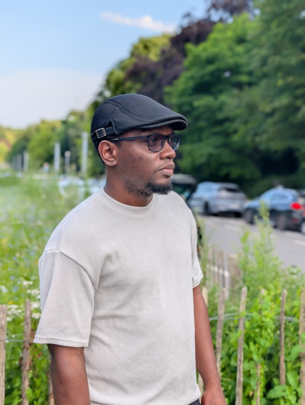

I am a PhD candidate and Junior Researcher in Applied Mathematics and Computational Engineering at LUT University (Finland). My research focuses on probabilistic numerics, non-stationary surrogate modeling, and adaptive algorithms for optimization and numerical integration.
Prior to my doctoral studies, I completed a Master's degree in Finland and graduated from the African Institute for Mathematical Sciences (AIMS).
Department of Computational Engineering, LUT University
Yliopistonkatu 34, 53850 Lappeenranta, Finland
Email: olivier.dondjio@lut.fi